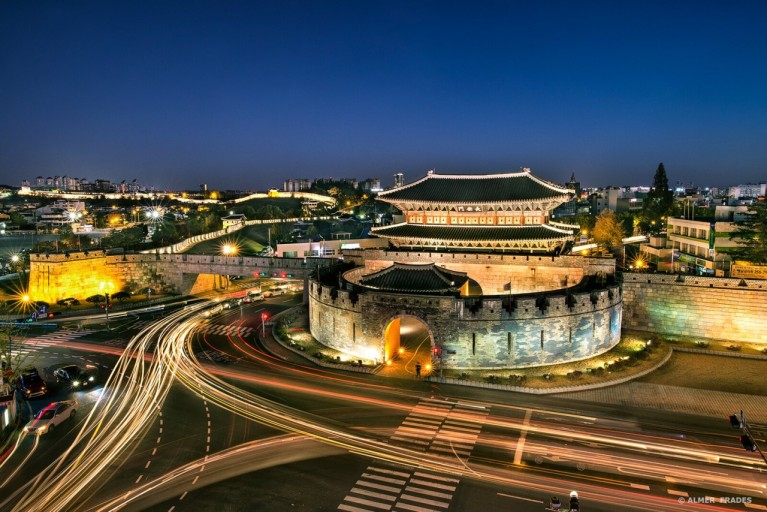

Suwon[a] (Korean: 수원; Hanja: 水原, Korean pronunciation: [su.wʌn]) is the capital and largest city of Gyeonggi-do, South Korea's t populous province which surrounds Seoul, the national capital. Suwon ies about 30 km (19 mi) south of Seoul. It is traditionally known as " The City of Filial Piety". With a population close to 1.3 million, it is larger than Ulsan, although it is not governed as a metropolitan city.

Suwon has existed in various forms throughout Korea's history, growing from a small settlement to become a major industrial and cultural center. It is the only remaining completely walled city in South Korea. The city walls are one of the more popular tourist destinations in Gyeonggi Province. Samsung Electronics R&D center and headquarters are in Suwon. The city is served by three motorways, the national railway network, and the Seoul Metropolitan Subway. Suwon is a major educational center, home to eleven universities.[3]